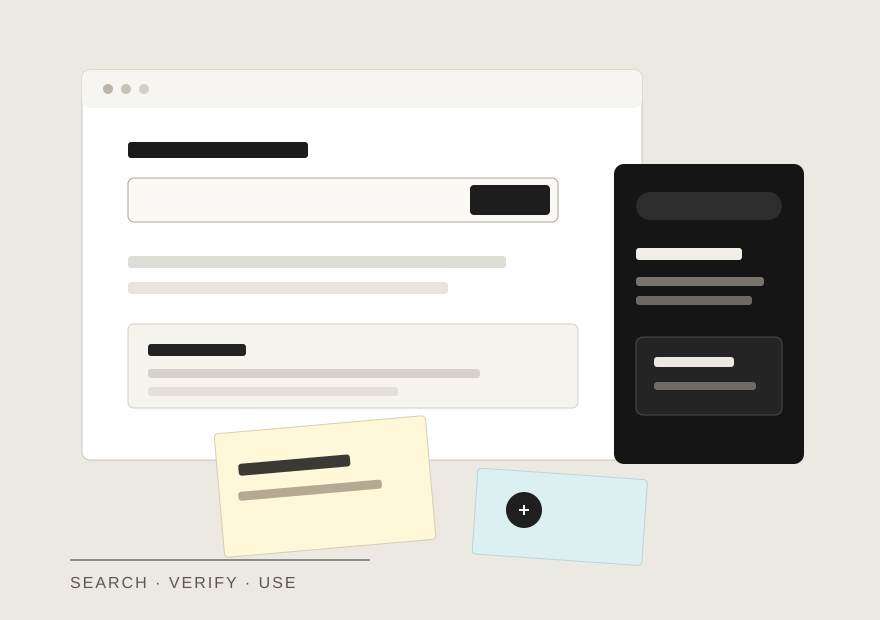
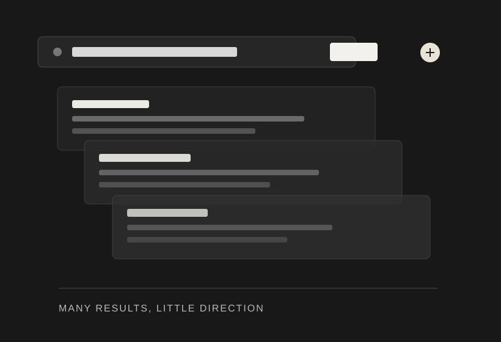
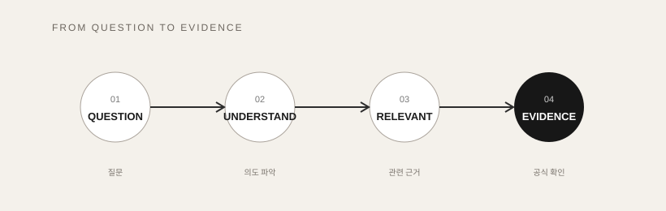

어떤 검색어를 써야 할까?
사용자는 상황을 알고 있지만 정확한 법률명이나 사내 문서명은 모를 수 있습니다.
UI Design · Publishing · AI 활용
법률명을 아는 사람만 사용할 수 있는 검색이 아니라, 평소 사용하는 질문에서 시작해 관련 쟁점과 공식 근거까지 이어지는 흐름을 정리하고 화면으로 구현했습니다.

법무 정보는 충분하지만, 사용자가 정확한 법률명과 문서 위치를 알고 있어야 찾기 쉬운 경우가 많습니다.
이번 프로젝트에서는 결과를 많이 보여주는 것보다 무엇을 먼저 확인해야 하는지 안내하는 흐름에 집중했습니다.
01 / Problem
검색 결과와 AI 답변이 많아질수록 법무 업무에서는 오히려 “이 근거가 맞는가?”를 확인하는 단계가 늘어날 수 있습니다.

사용자는 상황을 알고 있지만 정확한 법률명이나 사내 문서명은 모를 수 있습니다.
관련 자료가 한꺼번에 노출되면 사용자가 중요도를 다시 판단해야 합니다.
법무 정보는 요약보다 출처, 시행 여부, 최신 조문 확인 경로가 중요합니다.
02 / Solution
질문을 바로 법률 하나에 연결하지 않고, 먼저 쟁점을 좁힌 뒤 관련 근거와 공식 확인 경로를 차례로 볼 수 있도록 구성했습니다.

법률명을 몰라도 실제 업무 상황을 그대로 입력합니다.
개인정보, 플랫폼, 콘텐츠 등 핵심 쟁점을 먼저 나눕니다.
왜 확인해야 하는지 짧은 설명과 함께 우선순위를 제공합니다.
현행 조문과 시행 여부를 직접 확인하는 단계로 연결합니다.
03 / Prototype
아래 화면은 실제로 동작하는 HTML/CSS/JavaScript 프로토타입입니다. 검색어나 예시 버튼을 바꾸면 결과도 함께 변경됩니다.
04 / What I Bring
이 프로젝트에서는 UI 구성, 퍼블리싱, AI 활용을 하나의 작업 흐름으로 연결해 실제로 확인할 수 있는 프로토타입까지 만들었습니다.
현업에서 어떤 부분이 불편한지 확인하고 작업할 문제를 정리합니다.
복잡한 정보를 찾고 확인하기 쉬운 순서로 정리합니다.
정보와 화면을 정리하고 HTML, CSS, JavaScript로 직접 구현합니다.
현업 요구사항과 디자인, AI 도구를 연결해 실제 작업 흐름으로 발전시킵니다.